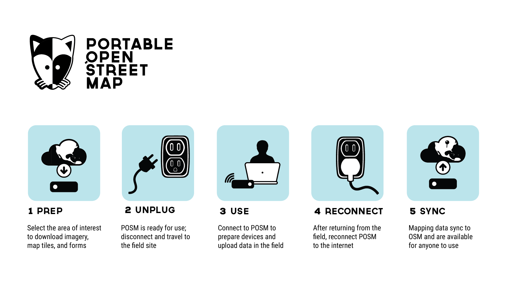

About
Portable OpenStreetMap (POSM) is a project by the American Red Cross
POSM's goal is to integrate best-of-breed tools from a variety of sources and developers on a single device that can be deployed to the field alongside Red Cross staff and volunteers and facilitate mapping efforts, particularly when internet access is absent.

Glossary
This is intended to provide a working definition of various terms used throughout POSM.
- AOI - Area of Interest.
- Atlas (Field Papers) - Identified by a Field Papers URL and represented as a QR code.
- Deployment - The sending of staff to a deployment AOI. Alternately, the provisioning of associated artifacts necessary to facilitate enumeration to a server accompanying staff into the field.
- Deployment AOI - A region that staff are deployed to. Typically corresponds to imagery / logistical requests.
- Digitization - Tracing / transcribing features present on a page into a GIS system (e.g. JOSM or iD).
- Extent - Bounding box coordinates describing an AOI.
- Field Enumeration - Collection of information about geographic features in the field.
- Form (OpenMapKit) - Set of questions used during a field survey. Generally unique to a deployment AOI.
- Page (Field Papers) - Single sheet of paper. Part of an atlas; identified using grid coordinates (e.g. A1, F6, ...). Corresponds to an individual survey area. Identified by a Field Papers URL and represented as a QR code.
- Provision - Artifacts associated with a task area.
- Snapshot (Field Papers) - Identified by a Field Papers URL.
- Survey (OpenMapKit) - ???
- Survey Area - A focused area within a task area. Should be sized appropriately that multiple survey areas can be covered by the same time in a single day. Corresponds to a single page within an atlas.
- Task Area - A focused area within the deployment AOI. Corresponds to a set of pages within an atlas.
- Response (OpenMapKit) - Collected metadata for an individual feature within a survey area.